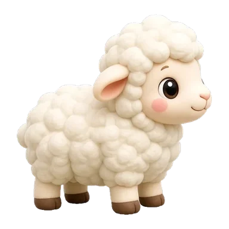
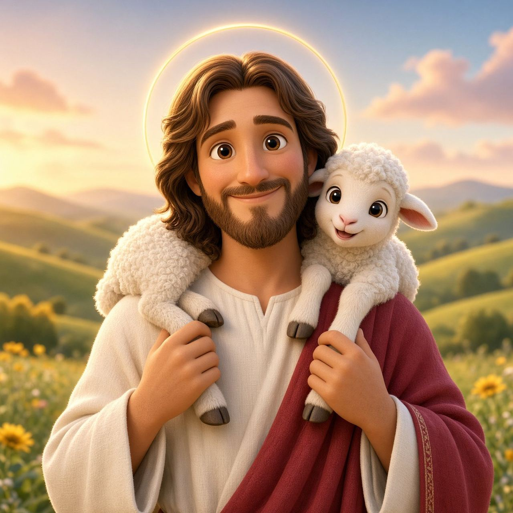
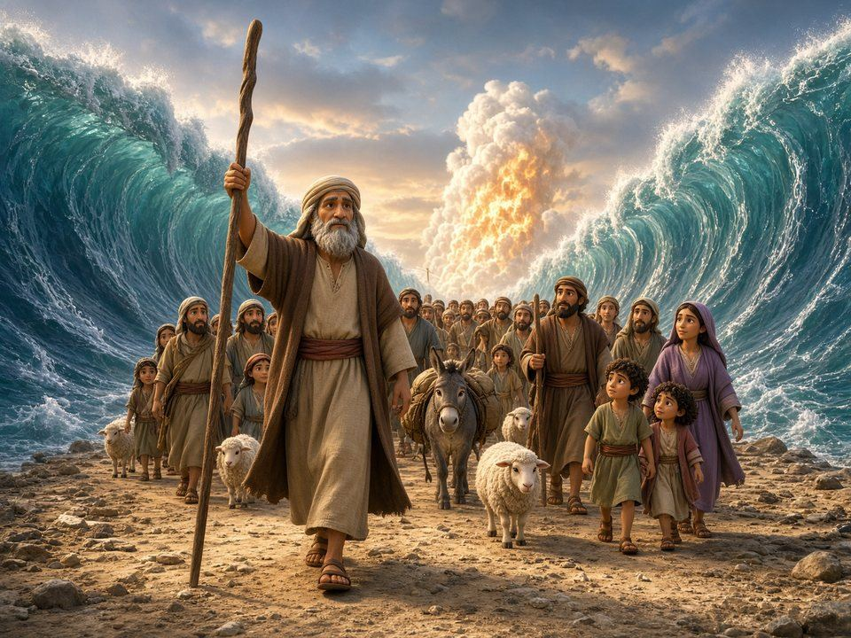
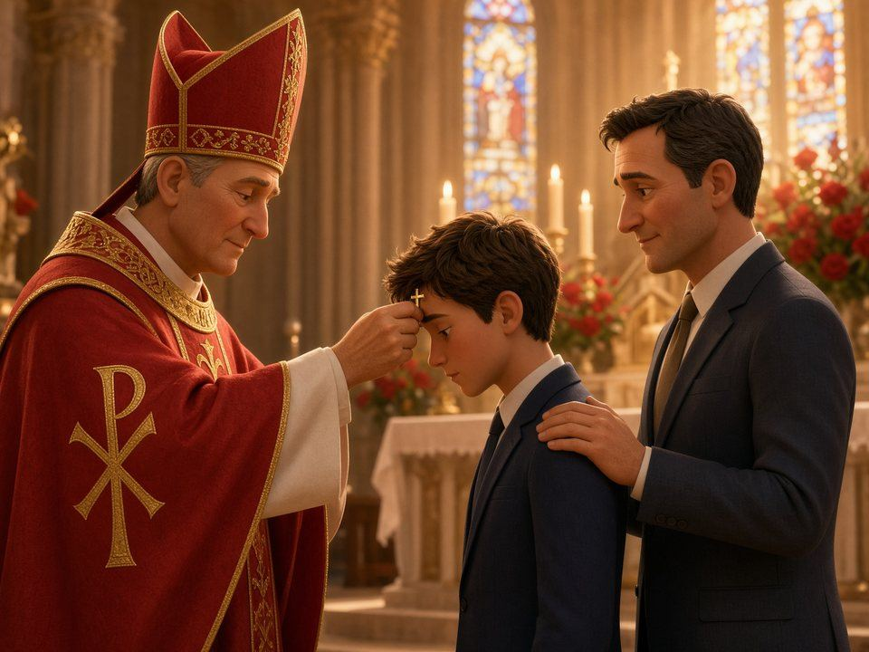
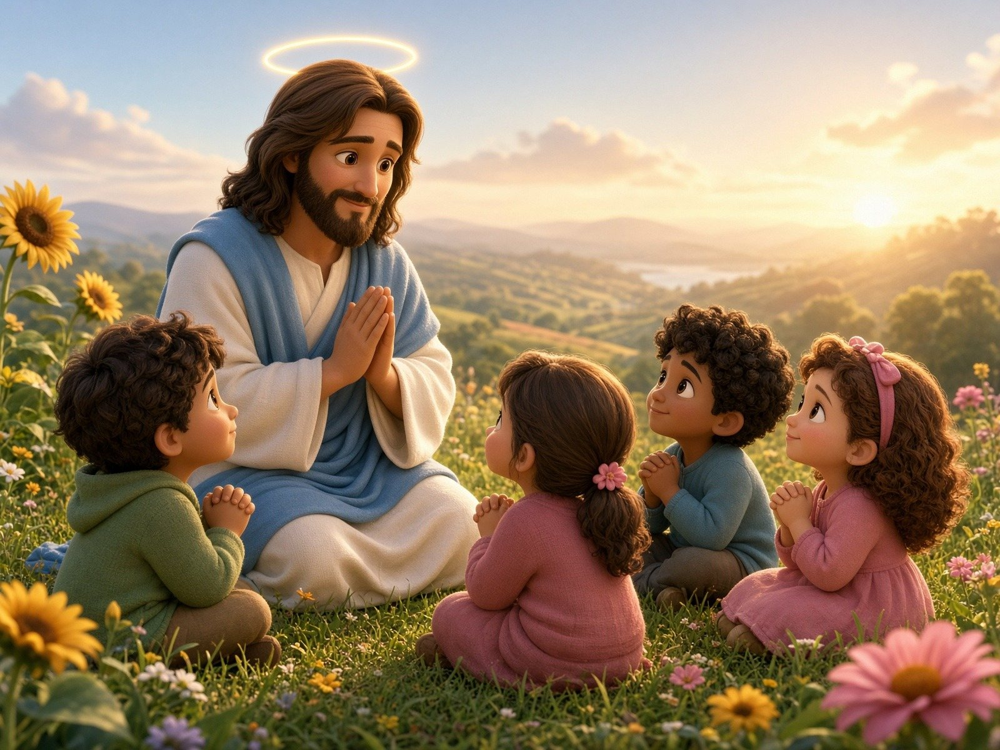
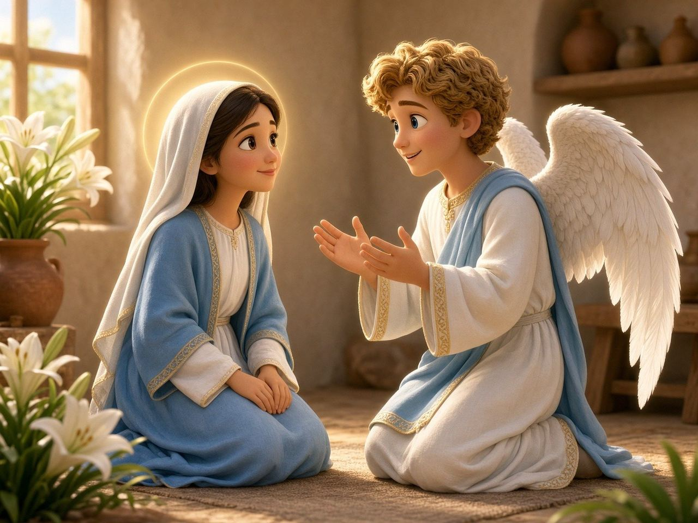
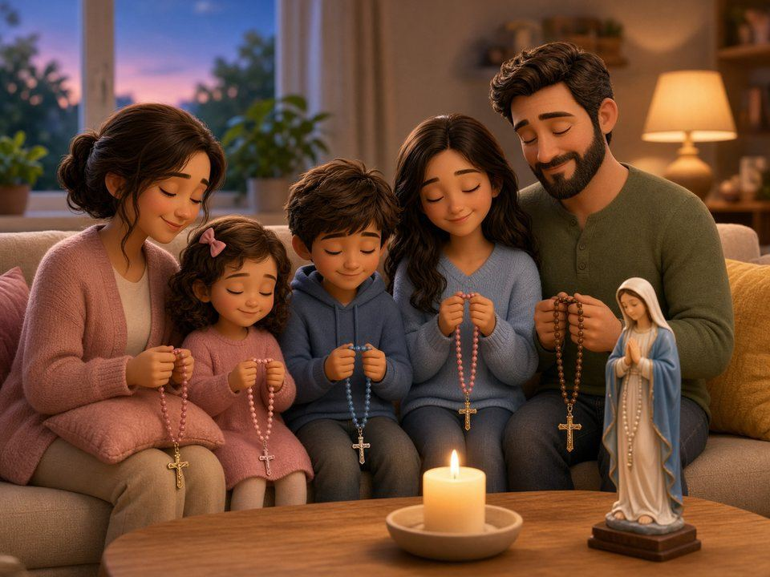
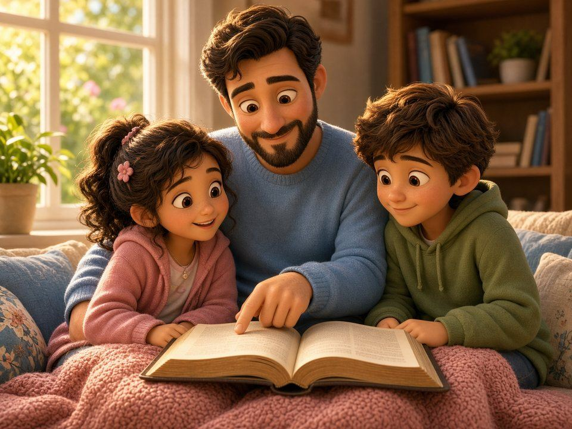
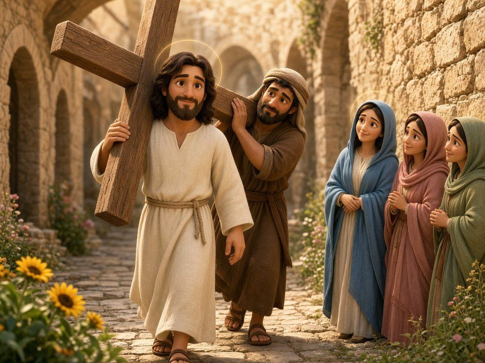

This is an interactive Catholic faith app for kids. This viewer can't play it, so it looks empty here.
Open Found! in Safari or Chrome
Each family's players and progress are saved only on their own device. Nothing is shared or collected.
A Catholic faith companion for kids from age 3 to Confirmation, and the grown-ups who love them.
Prayers, the Mass, saints, a bedtime talk with Jesus, and lessons for every stage, from wonder moments to Confirmation.
Tip for iPhone and iPad: add Found! to your Home Screen before you start, so it opens like an app. Tap Share, then Add to Home Screen. Progress stays with wherever you play.
Who's playing?
Ages 3 to 5
Wonder moments with the Good Shepherd.
Ten short moments with big pictures, words read aloud, and something to do together.

Growing Disciples
From Creation to Jesus to you.
Ten chapters through the whole Bible: Noah, Abraham, Moses, David, the prophets, Jesus, the Church, and your place in the story.

Confirmation
Ten sessions for your Confirmation years.
The Holy Spirit and His gifts, choosing your saint, your sponsor, the rite, and honest answers to hard questions.

The next sacrament
Jesus gives us Himself.
Eight short lessons: the Last Supper, how the bread and wine become Jesus, how to receive Him, and why we come back every Sunday.
Getting ready for a sacrament
13 lessons from the parish workbook.
Stories, games, and prayers that get you ready for your first confession, one step at a time.
Learn them by heart.
The prayers every Catholic knows, for every age, from the Sign of the Cross to the Creed.


Pray it together.
Today's mysteries, one bead at a time, with a leader and everyone answering.

Read it, find it, pray it.
Stories for every age, how the Bible works, and how to pray with it.

One small step a day.
In Advent, a story a day from the long wait for Jesus. In Lent, a way to pray, give, or go without, and a Sunday Gospel each week.
Walk with Jesus.
The fourteen Stations of the Cross, with words for little ones, kids, and older kids.

What it means, and what you do.
Every part of the Mass, from the holy water to “Go in peace.” When to stand, sit, and kneel, and what to say.
Every night
A quiet talk with Jesus before sleep.
Talk with Jesus about your day, in a way that fits your age, then pray together before sleep.
Made with Holy Family parish families in mind.
Lessons for every age, saints, prayers, Scripture, and reviews. Pages work offline after your first visit; videos need internet. Nothing is collected.
Ages 3 to 5
Wonder moments with Jesus, the Good Shepherd. Each one takes about five minutes, with a grown-up close by: big pictures, words read aloud, a little game, a tiny prayer, and something to do together.
Growing Disciples
The whole story of the Bible in ten chapters, from Creation to Jesus to you. See how every promise God made comes true, and find your own place in the story.
Confirmation
Saved only on this device.
First Reconciliation
Help Pip the lamb find the way home to the Good Shepherd. Each stop is one lesson from the workbook. Finish a lesson to move Pip along the path and win a saint card.
The next sacrament
Eight short lessons about Jesus in the Eucharist: the Last Supper, how the bread and wine become Jesus, how to receive Him, and why we come back every Sunday. Children usually receive First Communion in 2nd grade, after First Reconciliation.
These saints needed God's forgiveness too. Finish a lesson to open a card pack. Tap a card to see it big, then flip it to read about the saint.
Learn the prayers every Catholic knows, then say them by heart. There are prayers for every age, and quick games to practice for Mass.
Every Sunday
Jesus' whole family gathers to listen to God, give thanks, and receive Jesus. Scroll to walk through it, part by part.
Play a quick game to practice.
Found grows with your child, from age 3 to Confirmation: wonder moments for little ones, the First Reconciliation lessons from the parish workbook, First Communion, the Big Story of the Bible, and Confirmation preparation, with prayers, the Rosary, a Bible guide, the Mass (plus a silent follow-along for church) and a bedtime talk with God for every age. Below is guidance for the child playing now, then details about the First Reconciliation lessons.
Follow your parish's schedule, or do about one lesson a week, so all 13 are done before First Reconciliation. Your child can stop partway through a lesson and pick up there next time. Stop while your child still wants more. If attention drops, switch to the off-screen mission instead of pushing through.
One small thing to do together after each lesson.
What each lesson covers, so you can match it to the parish workbook.
Version A is the prayer printed in the workbook, and Lesson 9 teaches it line by line. Version B comes from the new English translation of the Order of Penance, used in U.S. parishes since April 2023; the traditional prayer is still fine. Any sincere act of contrition is valid, even in a child's own words. Ask your parish's faith formation office which one your child should memorize.
Confession is not getting in trouble. Plan a family treat afterward, as a party and not as a prize.
Practice the script at home and let your child play the priest too. Kids lose their fear when they know every line.
Say “You remembered all six parts!” rather than “You're so smart.” Effort praise builds staying power.
Players
Our parish
This device